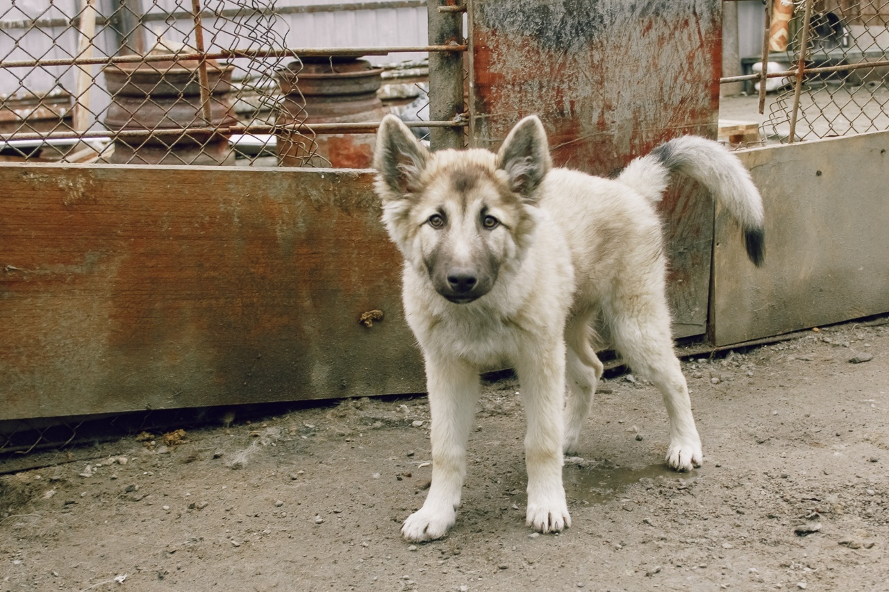

Многие собаки были спасены с отлова, от кого-то отказываются хозяева, и они оказываются на улице, а кто-то изначально был бездомным. Но несмотря на то, откуда псы, всем здесь дарят тепло и заботу. Почти у всех была сложная жизнь, и они требуют особого ухода и внимания, чтобы заново научиться доверять человеку. Волонтеры, работающие в приюте, с любовью относятся к каждому жителю этого места. Неравнодушные люди привозят теплые вещи, еду и лекарства, приезжают гулять с собаками, помогают убираться на территории. Также североморцы берут псов на кураторство - выбирают собаку и раз в месяц присылают средства на ее содержание.

При поступлении в приют и далее каждый год собаки проходят ветеринарный осмотр. У всех четвероногих есть паспорт, и они стабильно проходят и вакцинации.